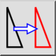
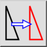
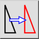
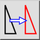

Déplacer/Copier
Barre d'outil / icône :
 

Menu : Modifier > Déplacer/Copier
Raccourci : M, V
Commandes : move | mv
Ceci est une traduction automatique.
Barre d'outil / icône :
 

Menu : Modifier > Déplacer/Copier
Raccourci : M, V
Commandes : move | mv
Déplace ou copie des entités.